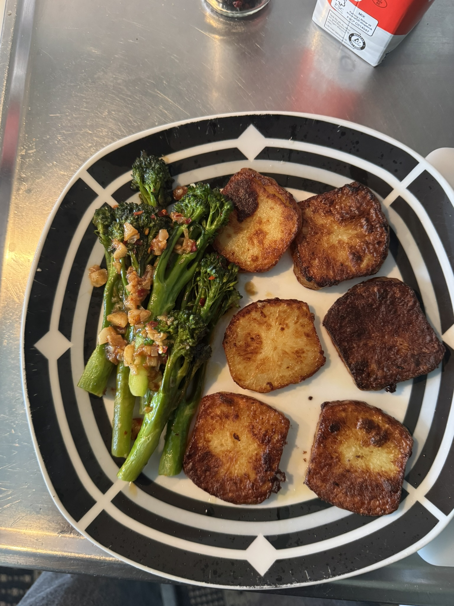
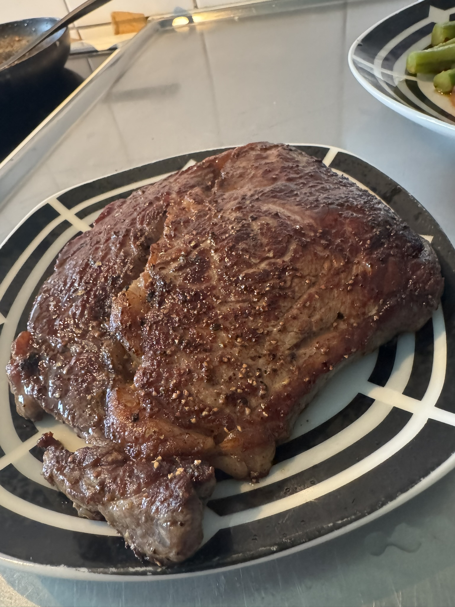
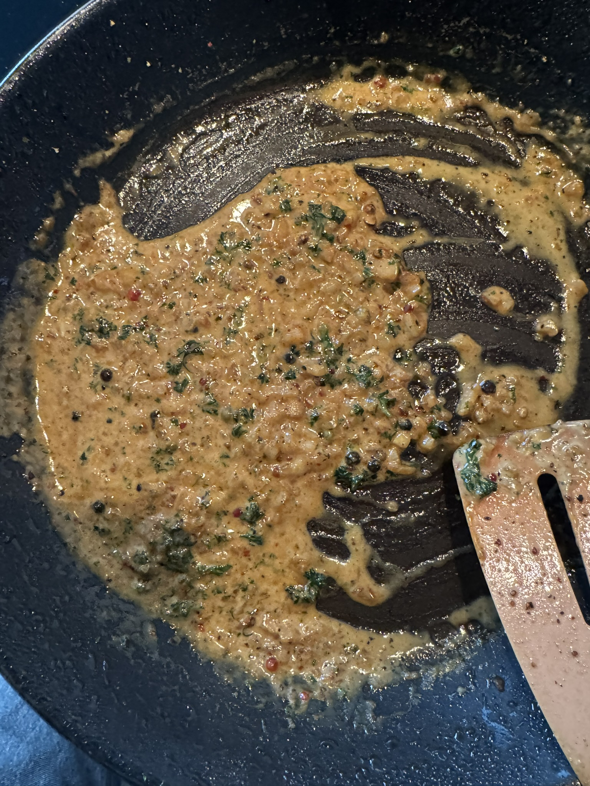
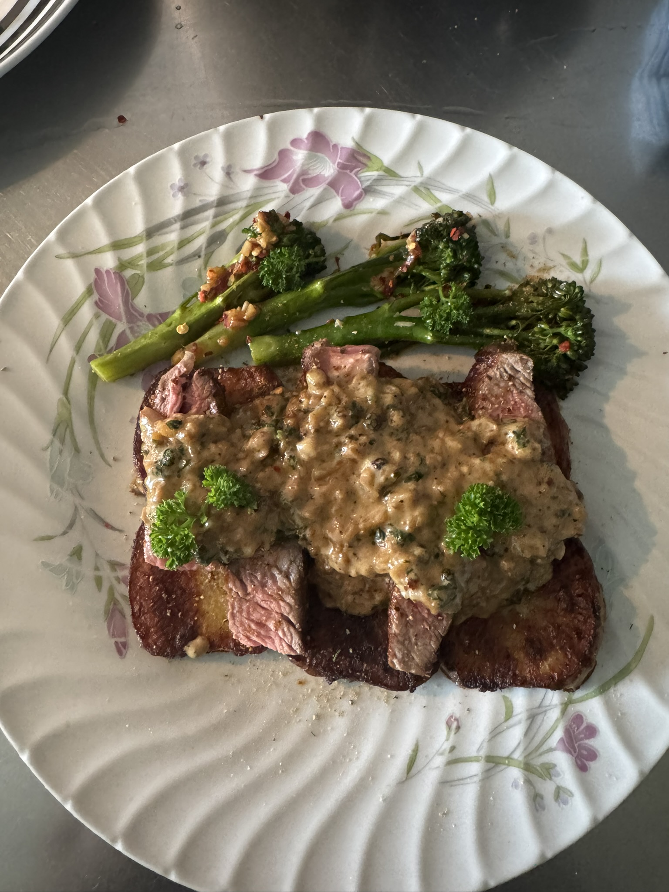

Entrecote med Broccolini
Ingredienser
- 2 entrecotebiffar à 250g
- 300g broccolini
- 400g potatis
- 50g smör
- Svartpepparsås (se recept nedan)
- Salt och peppar efter smak
Tillredning
- Förbereda potatis: Skala och dela potatisen i bitar. Koka tills den är mjuk, ungefär 15-20 minuter.
- Stek entrecoten: Värm två matskedar olja i en stekpanna. Lägg in entrecoten och stek 4-5 minuter per sida för medium.
- Smörstek broccolini: Värm smöret i en annan panna och smörstek broccolini tills den är gyllene och fast.
- Gör pepparsås: Använd köttsaften i pannan, tillsätt creme fraiche och hela pepparkornen.
- Servera: Presentera entrecoten, broccolini och potatis tillsammans med den värmda pepparsåsen.
Tips från Ahmed
Låt entrecoten ligga i rumstemperatur 20 minuter före stekning för jämn stekgrad. Använd ett köttermometer för perfekt resultat!
Bilder och video från tillredningen




Stekningsteknik
Servering